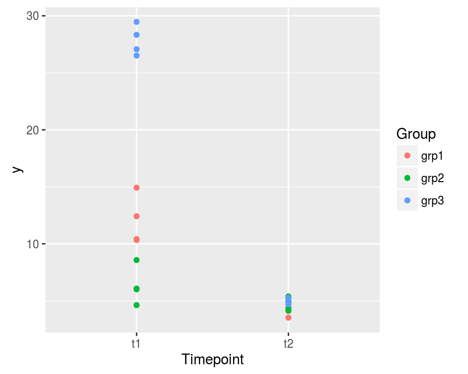

-
An example of mixed model with repeated measures
2016-03-08
Source(latest update : 2016-03-11 16:48:02)
The purpose of this article is to show how to fit a model to a dataset such as the one shown on the graphic below in SAS, R, and JAGS. The reader is assumed to have read the article on the random effects one-way ANOVA. Roughly speaking, the model of the present article consists of two random effects one-way ANOVA models at two different timepoints, including a correlation between these two models.
ggplot(dat, aes(x=Timepoint, y=y, color=Group)) + geom_point()
The dataset is the following one:
print(dat, digits=3)## Timepoint Group Repeat y ## 1 t1 grp1 1 10.42 ## 2 t1 grp1 2 10.34 ## 3 t1 grp1 3 14.93 ## 4 t1 grp1 4 12.42 ## 5 t1 grp2 1 4.63 ## 6 t1 grp2 2 6.08 ## 7 t1 grp2 3 6.01 ## 8 t1 grp2 4 8.58 ## 9 t1 grp3 1 29.47 ## 10 t1 grp3 2 28.33 ## 11 t1 grp3 3 27.07 ## 12 t1 grp3 4 26.51 ## 13 t2 grp1 1 3.53 ## 14 t2 grp1 2 5.27 ## 15 t2 grp1 3 4.11 ## 16 t2 grp1 4 4.34 ## 17 t2 grp2 1 4.94 ## 18 t2 grp2 2 5.39 ## 19 t2 grp2 3 4.37 ## 20 t2 grp2 4 4.15 ## 21 t2 grp3 1 5.26 ## 22 t2 grp3 2 5.19 ## 23 t2 grp3 3 4.73 ## 24 t2 grp3 4 4.71The records are taken on three groups at two timepoints. Four measures are recorded for each group at each timepoint. We make the assumption that the within-group variance is the same for the three groups at each timepoint, but we assume a different within-group variance for the two timepoints, as clearly shown by the graphic.
We use the indexes \(i\), \(j\) and \(k\) to respectively denote the timepoint, the group and the observation.
Since the records at the two timepoints are taken on the same groups, we require a correlation between the records of a same group taken at the two timepoints. A way to go consists in assuming that the theoretical pairs of means \((\mu_{1j}, \mu_{2j})\) of the groups are random effects following a bivariate normal distribution: \[ \begin{pmatrix} \mu_{1j} \\ \mu_{2j} \end{pmatrix} \sim_{\text{iid}} {\cal N}\left(\begin{pmatrix} \mu_{1} \\ \mu_{2} \end{pmatrix}, \begin{pmatrix} \sigma^2_{b_1} & \rho_b\sigma_{b_1}\sigma_{b_2} \\ \rho_b\sigma_{b_1}\sigma_{b_2} & \sigma^2_{b_2} \end{pmatrix} \right), \] centered around the theoretical pair of means \((\mu_1, \mu_2)\) at the two timepoints. Then one assumes that for each timepoint \(i\), the observations follow a normal distribution within each group \(j\), with, as said before, a within-variance \(\sigma^2_{w_i}\) for each timepoint \(i\): \[ (y_{ijk} \mid \mu_{ij}) \sim_{\text{iid}} {\cal N}(\mu_{ij}, \sigma^2_{w_i}). \]
Fitting the model in SAS
The following SAS code fits the above model.
PROC MIXED DATA=dat COVTEST ; CLASS Timepoint Group Repeat ; MODEL y = Timepoint ; RANDOM Timepoint / SUBJECT=Group type=UN G GCORR ; REPEATED Repeat / SUBJECT=Group*Timepoint GROUP=Timepoint type=VC R RCORR ; RUN; QUIT;The
type=UNoption in theRANDOMstatement specifies the “unstructured” type of the between variance matrix \(\Sigma_b=\begin{pmatrix} \sigma^2_{b_1} & \rho_b\sigma_{b_1}\sigma_{b_2} \\ \rho_b\sigma_{b_1}\sigma_{b_2} & \sigma^2_{b_2} \end{pmatrix}\).The
type=VCoption together with theGROUP=Timepointoption in theREPEATEDstatement specify the within variance matrix \[ \Sigma_{w_i} = \begin{pmatrix} \sigma_{w_i} & 0 & 0 & 0 \\ 0 & \sigma_{w_i} & 0 & 0 \\ 0 & 0 & \sigma_{w_i} & 0 \\ 0 & 0 & 0 & \sigma_{w_i} \end{pmatrix} \] for each timepoint \(i\).Fitting the model in R with
nlmeThe R syntax with the
lmefunction of thenlmepackage is the following one:library(nlme) lme(y ~ Timepoint, data=dat, random= list(Group = pdSymm(~ 0+Timepoint )), weights = varIdent(form = ~ Group:Timepoint | Timepoint) )## Linear mixed-effects model fit by REML ## Data: dat ## Log-restricted-likelihood: -38.33932 ## Fixed: y ~ Timepoint ## (Intercept) Timepointt2 ## 15.39774 -10.73188 ## ## Random effects: ## Formula: ~0 + Timepoint | Group ## Structure: General positive-definite ## StdDev Corr ## Timepointt1 11.1168180 Tmpnt1 ## Timepointt2 0.2066217 1 ## Residual 1.7433792 ## ## Variance function: ## Structure: Different standard deviations per stratum ## Formula: ~Group:Timepoint | Timepoint ## Parameter estimates: ## t1 t2 ## 1.0000000 0.3154435 ## Number of Observations: 24 ## Number of Groups: 3The
Fixedpart of the output returns15.39774as the estimate of \(\mu_1\) and-10.73188as the estimate of \(\mu_2-\mu_1\), hence the estimate ofmu_2is:15.39774 - 10.73188 ## [1] 4.66586The
Random effectspart of the output returns the estimates of the two between standard deviations \(\sigma_{b_1}\) and \(\sigma_{b_2}\), and the correlation \(\rho\) (the estimate1looks pathological). TheResidualstandard deviation is the estimate of the within-standard deviation \(\sigma_{w_1}\) at timepointt1. One can see thatt1is taken as a reference level in the parameter estimates given in theVariance functionpart of the output. The estimate corresponding tot2, here0.3154435, is the ratio of the estimates of \(\sigma_{w_2}\) by \(\sigma_{w_1}\). Thus the estimate of \(\sigma_{w_2}\) is:1.7433792 * 0.3154435 ## [1] 0.5499376Fitting the model with JAGS (and
rjags)In order to use JAGS, one needs the integer indices for the timepoint and the group. Since the
TimepointandGroupcolumns have thefactorclass, one simply uses theas.integerfunction to get the indexes:str(dat) ## 'data.frame': 24 obs. of 4 variables: ## $ Timepoint: Factor w/ 2 levels "t1","t2": 1 1 1 1 1 1 1 1 1 1 ... ## $ Group : Factor w/ 3 levels "grp1","grp2",..: 1 1 1 1 2 2 2 2 3 3 ... ## $ Repeat : int 1 2 3 4 1 2 3 4 1 2 ... ## $ y : num 10.42 10.34 14.93 12.42 4.63 ... dat <- transform(dat, timepoint=as.integer(Timepoint), group=as.integer(Group)) head(dat) ## Timepoint Group Repeat y timepoint group ## 1 t1 grp1 1 10.417068 1 1 ## 2 t1 grp1 2 10.337811 1 1 ## 3 t1 grp1 3 14.925376 1 1 ## 4 t1 grp1 4 12.421879 1 1 ## 5 t1 grp2 1 4.627043 1 2 ## 6 t1 grp2 2 6.075636 1 2The JAGS code of the model must be written in a text file. I like to do so with the help of the
write.modelfunction of theR2WinBUGSpackage:jagsfile <- "JAGSmodel.txt" jagsmodel <- function(){ for(i in 1:ngroups){ mu[i,1:2] ~ dmnorm(Mu[1:2], Omega[1:2,1:2]) } for(k in 1:n){ y[k] ~ dnorm(mu[group[k], timepoint[k]], precw[timepoint[k]]) } Omega ~ dwish(Omega0, df0) Mu[1] ~ dnorm(0, 0.001) # overall mean timepoint 1 Mu[2] ~ dnorm(0, 0.001) # overall mean timepoint 2 precw[1] ~ dgamma(1, 0.001) # inverse within variance timepoint 1 precw[2] ~ dgamma(1, 0.001) # inverse within variance timepoint 2 sigmaw1 <- 1/sqrt(precw[1]) sigmaw2 <- 1/sqrt(precw[2]) Sigma <- inverse(Omega) sigmab1 <- sqrt(Sigma[1,1]) sigmab2 <- sqrt(Sigma[2,2]) rhob <- Sigma[1,2]/(sigmab1*sigmab2) } R2WinBUGS::write.model(jagsmodel, jagsfile)All the data parameters must be passed in the
jags.modelfunction into a list:jagsdata <- list(y=dat$y, ngroups=nlevels(dat$Group), n=length(dat$y), timepoint=dat$timepoint, group=dat$group, Omega0 = 100*diag(2), df0=2)The initial values of the MCMC sampler performed by JAGS must be passed into a list of lists: one list for each chain. As I explained in this article, I firstly write a function which takes the dataset as input and allowing to randomly perturb these observations, and which returns some estimates of the parameters (frequentist or rough estimates) :
estimates <- function(dat, perturb=FALSE){ if(perturb) dat$y <- dat$y + rnorm(length(dat$y), 0, 1) mu <- matrix(aggregate(y~timepoint:group, data=dat, FUN=mean)$y, ncol=2, byrow=TRUE) Mu <- colMeans(mu) Omega <- solve(cov(mu)) precw1 <- mean(1/aggregate(y~Group, data=subset(dat, Timepoint=="t1"), FUN=var)$y) precw2 <- mean(1/aggregate(y~Group, data=subset(dat, Timepoint=="t2"), FUN=var)$y) precw <- c(precw1, precw2) return(list(mu=mu, Mu=Mu, Omega=Omega, precw=precw)) }Then I take the estimates derived from the original data for the first chain and the estimates derived from the disturbed data for the other chains:
inits1 <- estimates(dat) inits2 <- estimates(dat, perturb=TRUE) inits3 <- estimates(dat, perturb=TRUE) inits <- list(inits1,inits2,inits3)Now everything is ready in order to run JAGS. It is fast for this model, so I do not hesitate to use
100000iterations:library(rjags) jagsmodel <- jags.model(jagsfile, data = jagsdata, inits = inits, n.chains = length(inits)) ## Compiling model graph ## Resolving undeclared variables ## Allocating nodes ## Graph information: ## Observed stochastic nodes: 24 ## Unobserved stochastic nodes: 8 ## Total graph size: 119 ## update(jagsmodel, 10000) # warm-up samples <- coda.samples(jagsmodel, c("Mu", "sigmaw1", "sigmaw2", "sigmab1", "sigmab2", "rhob"), n.iter= 100000)Below are the summary statistics of the posterior samples:
summary(samples)## ## Iterations = 10001:110000 ## Thinning interval = 1 ## Number of chains = 3 ## Sample size per chain = 1e+05 ## ## 1. Empirical mean and standard deviation for each variable, ## plus standard error of the mean: ## ## Mean SD Naive SE Time-series SE ## Mu[1] 14.28034 8.5724 0.0156510 0.0246798 ## Mu[2] 4.53484 4.8979 0.0089422 0.0145076 ## rhob 0.02137 0.4934 0.0009008 0.0012364 ## sigmab1 14.28748 9.1460 0.0166983 0.0235993 ## sigmab2 7.79166 5.0868 0.0092871 0.0140087 ## sigmaw1 1.70017 0.4070 0.0007431 0.0009628 ## sigmaw2 0.54100 0.1295 0.0002365 0.0003034 ## ## 2. Quantiles for each variable: ## ## 2.5% 25% 50% 75% 97.5% ## Mu[1] -4.2311 9.9415 14.63012 19.0634 30.5565 ## Mu[2] -5.4210 2.0740 4.56833 7.0506 14.2447 ## rhob -0.8615 -0.3753 0.02889 0.4204 0.8741 ## sigmab1 6.0102 9.0890 11.91345 16.5015 36.6755 ## sigmab2 3.2646 4.9196 6.46472 8.9685 20.3516 ## sigmaw1 1.1208 1.4156 1.63077 1.9049 2.6887 ## sigmaw2 0.3565 0.4507 0.51845 0.6055 0.8553Except for \(\sigma_{b_2}\) and \(\rho_b\), the estimates are quite similar to the ones provided by
lme.I noted that \(\sigma_{b_2}\) is still overestimated when I fit the model on a larger sample size, while \(\rho_b\) is underestimated. I will come back to this point in the next article.
- Home
- About
- PoirotReproducible Blogging with R Markdown
- SlidifyReproducible html5 slides from R markdown
- R-bloggersBlog posts about R, contributed by R bloggers worldwide.
- stla.overblogMy previous blog
- Timely Portfolio A great blog about R, Javascript, and more